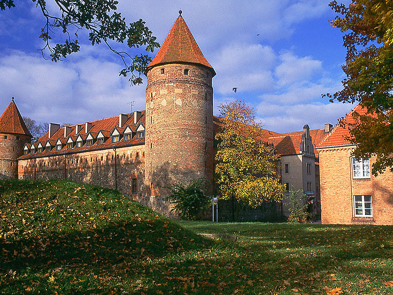
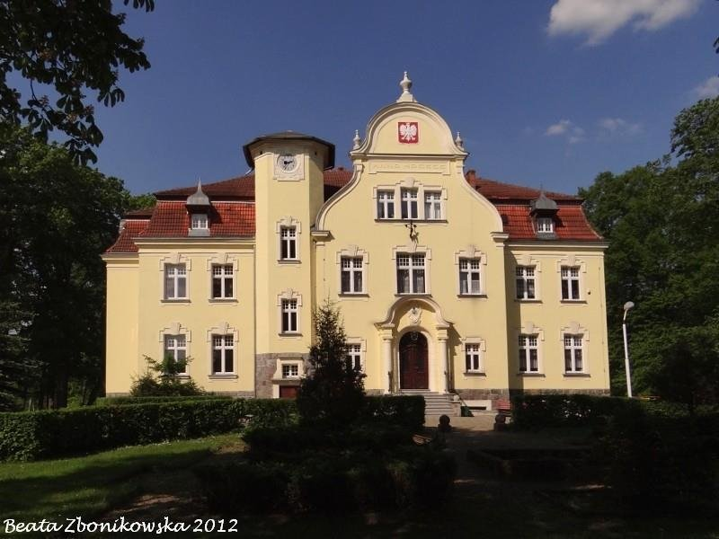
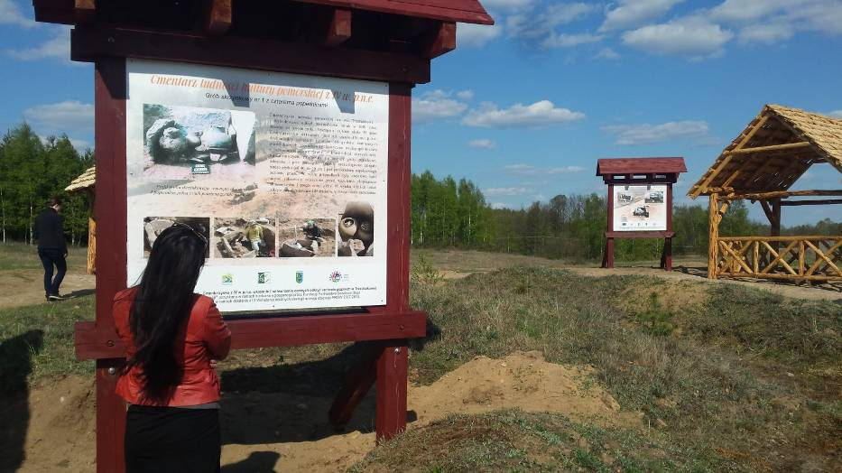

Dane o powiecie
| Siedziba | Bytów |
| Powierzchnia | 2192,07 km² |
| Populacja | 78 805 |
Dane kontaktowe starostwa powiatowego
| Telefon | +48 59 822 80 00 |
| Adres | ul. ks. dr. Bolesława Domańskiego 2 77-100 Bytów |
| Strona | bip.powiatbytowski.pl |
Atrakcje turystyczne
Opis atrakcji pochodzi ze storny powiatbytowski.pl
Zamek bytowski
Zamek pokrzyżacki z przełomu XIV i XV wieku (1398 - 1405), zbudowany na planie prostokąta. Posiada trzy baszty okrągłe oraz czworoboczną wieżę Prochową. Główny i najstarszy gotycki budynek, tzw. Dom Zakonny (obecnie muzeum) znajduje się w północno zachodniej części zamku.
Pałac w Tursku
 Źródło: pomorskie.dipp.info.plWieś Tursko położona jest w odległości 15 km na północ od Miastka nad jeziorem Tursko (6,71ha). Nad jeziorem znajduje się pełniący obecnie funkcję ośrodka szkolno - wychowawczego pałac z roku 1900, a także park oraz zabudowania gospodarcze należące niegdyś do rodziny Zitzewitzów. Niedaleko pałacu w lesie położony jest dobrze zachowany cmentarz poewangelicki - miejsce pochówku rodziny Zitzewitzów.
Cmentarzysko Ludności Kultury Pomorskiej w Trzebiatkowej
 Źródło: bytow.naszemiasto.plCmentarzysko Ludności Kultury Pomorskiej zostało odkryte przypadkowo, wiosną 2001 r., przez właściciela gruntu na którym znajduje się cmentarzysko, w trakcie prowadzenia prac rolnych. Podczas tych prac rolnik natrafił na zalegające bardzo płytko pod powierzchnią gruntu groby o kamiennej konstrukcji, które zostały przez niego wyeksplorowane i częściowo rozebrane.